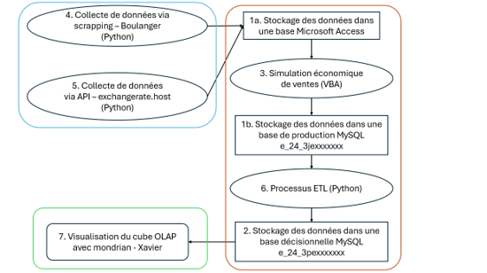
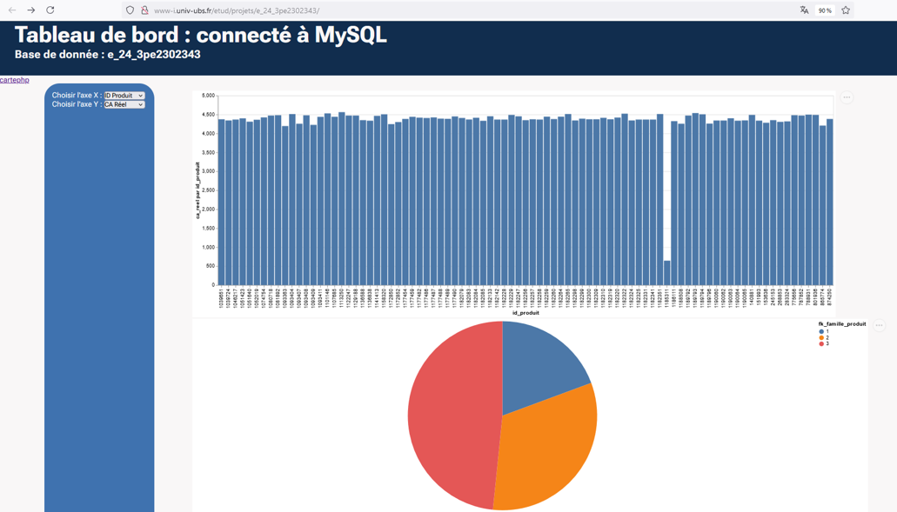

Objectifs de la mission
Lors d'un projet encadrée par l'IUT, nous devions, à l'aide d'un code construit en Python, réalisé un scrapping de page web afin d'alimenter des tables MySQL, pour ensuite interrogé cette table sur une page web dans l'objectif de crée des visuels en JavaScript.
Déroulement de la mission
Dans un premier temps, nous avons développé avec le langage de programmation Python et la librairie Selenium, permettant de récupérer les données de pages web, comme les prix de certains articles.
Après avoir laissé le programme tourner 12 h, nous avions récolté plus de 12 000 articles provenant du site Boulanger, avec les informations associées comme le prix ou la catégorie.
Pendant ce temps, nous avons réalisé deux modèles de données Oracle, l'un pour la production, l'autre pour le décisionnel.
Nous avions aussi récolté les devises et les valeurs de change de celles-ci via un autre code Python récupérant les données d'une API, afin de mettre à jour
les prix des produits dans les tables.
Une fois cela réalisé, nous avons rempli une base de données MySQL créée au préalable, en passant par un ETL lui aussi codé en Python.
Pour le faire, nous avons dû passer par une base Access. En effet, il n’était pas possible de transposer directement depuis Oracle, mais un code VBA produit par notre
professeur permettait de le faire.
Une fois terminé, nous avons alimenté une page web avec notre base de données organisée en cube. Nous avons pu développer des visuels l'utilisant.
Organisation du projet (numérotée par ordre de rendu)

Prototype de la page Web
